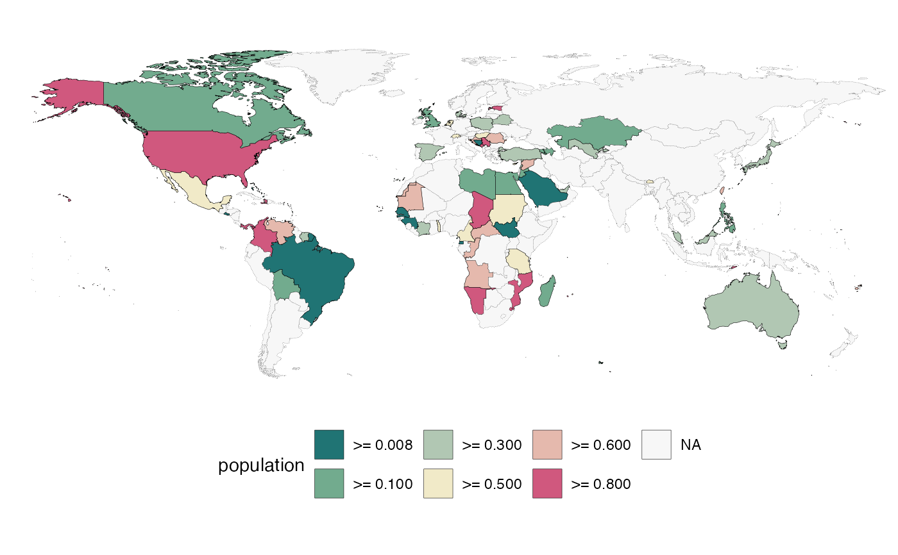
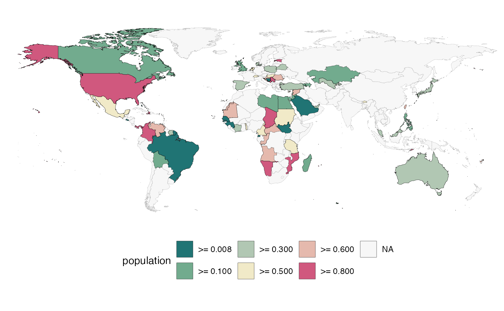
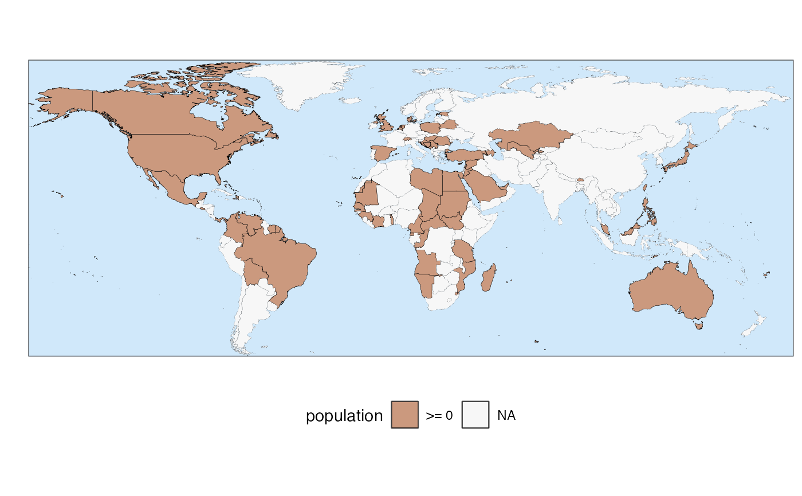
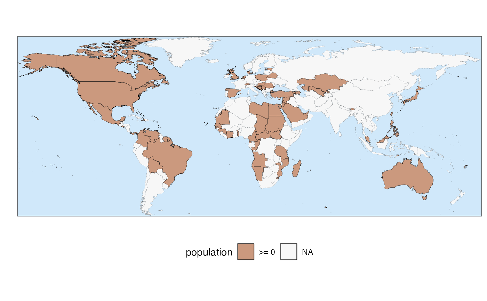

quick_map() allows to plot country chloropleth maps with one line of code.
The only inputs required are a data.frame object and the name of the column to plot.
The function uses country_name()'s capabilities to automatically match country names to one of the territories in the ISO standard 3166-1. This allows fuzzy matching of country names in multiple languages and nomenclatures.
For some map examples, see this article.
Usage
quick_map(
data,
plot_col,
theme = 1,
zoom = "Default",
verbose = FALSE,
save_to = NULL,
width_plot = 30,
name_legend = NULL,
reverse_palette = FALSE,
col_breaks = NULL,
col_border = "black",
col_na = "grey97",
width_border = 0.1
)Arguments
- data
Table (data.frame) containing the data to plot. Each row in the table should correspond to a country. One of the columns should contain country names.
- plot_col
Name of the column to plot.
- theme
A numeric value or name identifying one of the predefined visual themes for the map. Can be a number between 1 and 11, or one of the predefined theme's names:
c("Default", "Greyscale", "Candy", "RedBlue", "Dark", "Reds", "Blues", "Greens", "Viridis", "Cividis", "Distinct", "Distinct2", "Paired"). If0or"NoTheme"is passed, no theme will be applied (default `ggplot2`'s settings are used).- zoom
This argument defines the zoom applied to the map. It can be either a string identifying one of the predefined zoom boxes (
"Default", "World", "Africa", "Asia", "Europe", "SEAsia", "NAmerica", "CAmerica", "SAmerica", "Oceania"). Alternatively, the user may provide a numeric vector of length 4 describing the min/max longitude and latitude (e.g.c(-80, -35, -55, 10)defines a zoom on South America).- verbose
Logical value indicating whether to print messages to the console. Default is
FALSE.- save_to
Path to the file where the plot is to be saved. This need to be in an existing directory. The default is
NULL, which does not save the plot.- width_plot
Width (in cm) when plot is saved to a file. The ratio between height and width is fixed. This argument is only relevant if
save_tois different fromNULL. Default is30. For custom saving options the functionggsave()can be used.- name_legend
String giving the name to be used for the plotted variable in the legend of the map. If nothing is provided, the default is to use the name in
plot_col.- reverse_palette
Logical value indicating whether to reverse the order of the colours in the palette. Default is
FALSE.- col_breaks
Only relevant for numeric data. This argument allows the user to provide manual breaks for the colour scale. Needs to be a numeric vector (
c(0, 100, 500, 1000)). Default isNULL, which will result in breaks being automatically selected by the function. Note that data with 6 or less unique values will be treated as factor by the function.- col_border
Colour of border line separating countries and landmasses. Default is
"black".- col_na
Colour for countries with missing data (NAs). Default is
"grey97".- width_border
Numeric value giving the width of the border lines between countries. Default is `0.1`.
Details
Good to know
quick_map() only allows plotting of territories in the ISO standard 3166-1. It does not support plotting of other regions.
The output of the function is a ggplot object. This means means that users can then customise the look of the output by applying any of ggplot's methods.
Disclaimer
Territories' borders and shapes are intended for illustrative purpose. They might be outdated and do not imply the expression of any opinion on the part of the package developers.
Examples
# creating some sample data to plot
example_data <- data.frame(country = random_countries(100), population = runif(100))
# make a map
quick_map(example_data, "population")
 # The function provides several predefined themes
quick_map(example_data, "population", theme = 3)

quick_map(example_data, "population", theme = "Reds")
# The function provides several predefined themes
quick_map(example_data, "population", theme = 3)

quick_map(example_data, "population", theme = "Reds")
 # provide breaks for the colour scale
quick_map(example_data, "population", col_breaks = c(0, 1e5, 1e6, 1e7, 1e8, 1e9))

# provide breaks for the colour scale
quick_map(example_data, "population", col_breaks = c(0, 1e5, 1e6, 1e7, 1e8, 1e9))
